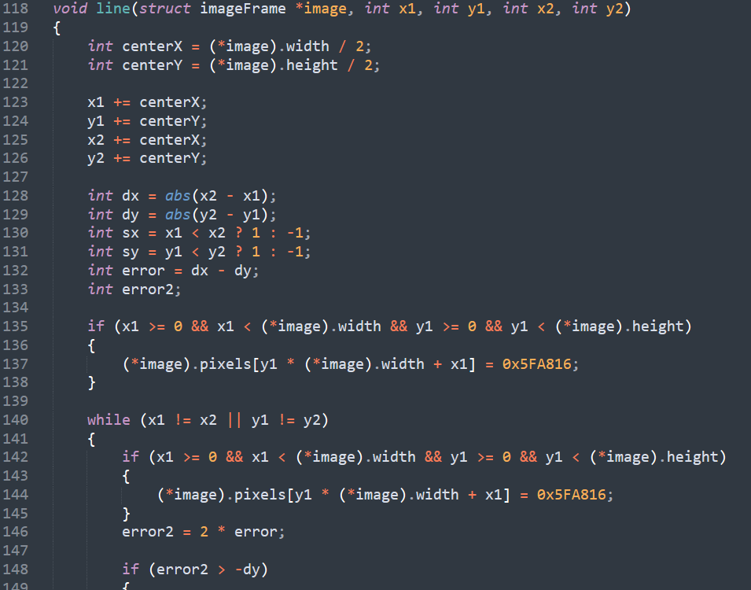

OUTDATED PROJECT
I am currently working on Vulkan to switch this project to something more usable.
I will post a section about it, as soon as I get a consitent progress.
3D PROJECTION

For this program, I wanted to learn the fundamental
concepts of 3D rendering; then apply them starting
from the very simple windows.h's window in c.
My goal was to get a minimalist result.
I searched for a minimalist c compiler and found: tcc. Then I learn to manage memory and c limitations.
It has been my first experience with setting up a well planned environnment specific to a project. This initiated me to automatization, and precisely custom batch files.
Once I had all my elements, I tested the program using SDL.
My goal was to get a minimalist result.
I searched for a minimalist c compiler and found: tcc. Then I learn to manage memory and c limitations.
It has been my first experience with setting up a well planned environnment specific to a project. This initiated me to automatization, and precisely custom batch files.
Once I had all my elements, I tested the program using SDL.

I started by implementing the Bresenham's line algorithm.
It consists of choosing a starting and an ending point and, check the ratio of the x and y axis + an error value that increase each incrementatiion, then, know if the next pixel will come along or lower/higher than the previous pixel.
It consists of choosing a starting and an ending point and, check the ratio of the x and y axis + an error value that increase each incrementatiion, then, know if the next pixel will come along or lower/higher than the previous pixel.

To apply transform to an object, the program
needs to use matrices.
In this case these matrices are for a rotation.
Every points have 3 axes, and the depth axis will influence the original 2 dimensionnal axes using the sin and cos functions, wich have a "circular rotator effect".
In this case these matrices are for a rotation.
Every points have 3 axes, and the depth axis will influence the original 2 dimensionnal axes using the sin and cos functions, wich have a "circular rotator effect".

To complete, I removed SDL and set up a
window handler. Using a standard window,
as I did for SDL, caused very problematics
performance issues. So I looked for
other ways to display what I had.
I found BitBlt ; it is a function that copy
a bitmap to another. Set the window to display
a bitmap, and the screen will be refresh correctly!